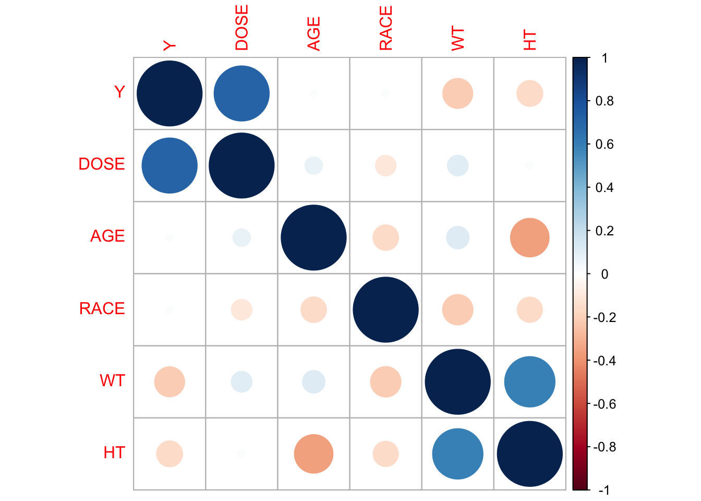
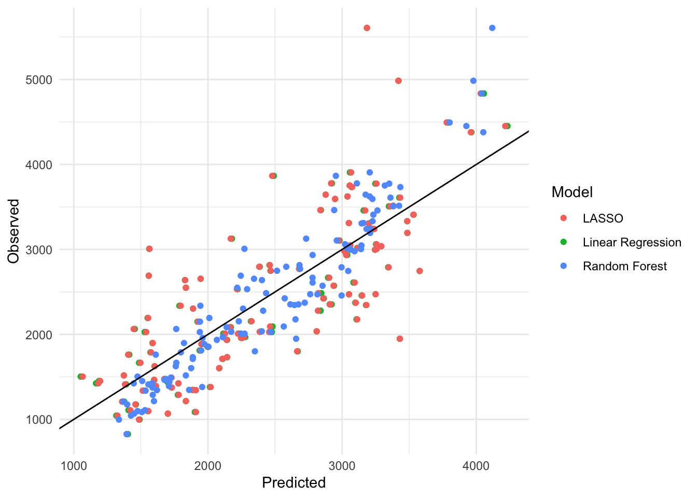
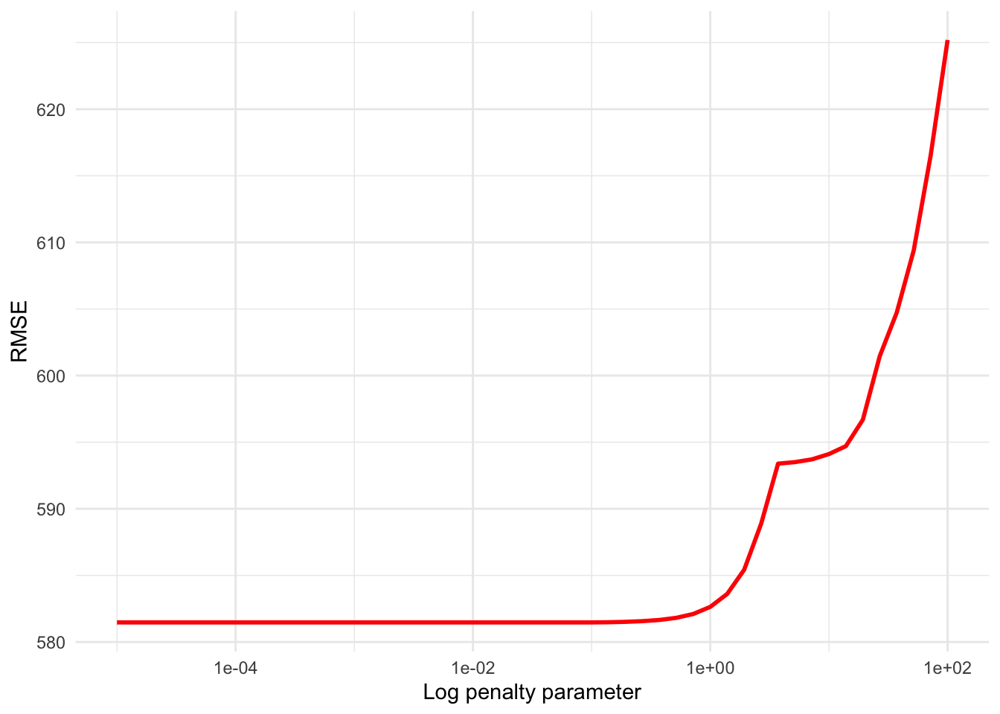
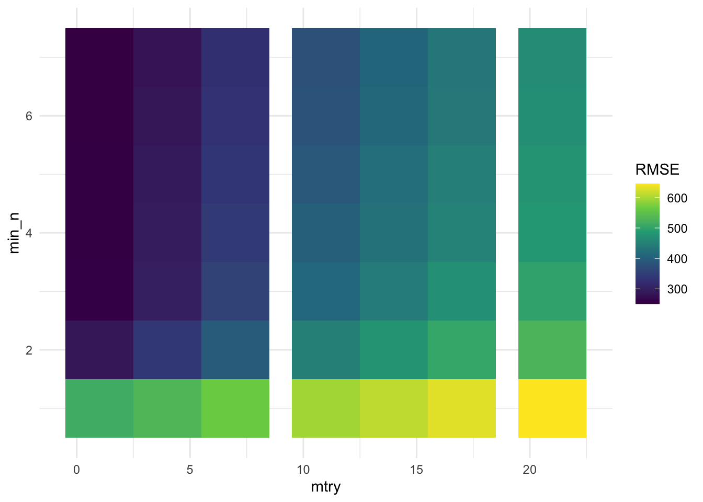
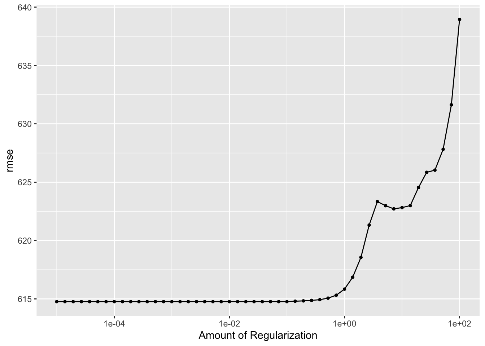
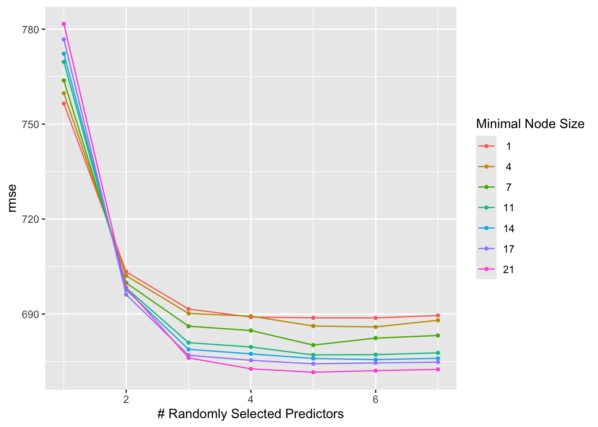

── Attaching core tidyverse packages ──────────────────────── tidyverse 2.0.0 ──
✔ dplyr 1.1.4 ✔ readr 2.1.5
✔ forcats 1.0.0 ✔ stringr 1.5.1
✔ ggplot2 3.5.1 ✔ tibble 3.2.1
✔ lubridate 1.9.4 ✔ tidyr 1.3.1
✔ purrr 1.0.2
── Conflicts ────────────────────────────────────────── tidyverse_conflicts() ──
✖ dplyr::filter() masks stats::filter()
✖ dplyr::lag() masks stats::lag()
ℹ Use the conflicted package (<http://conflicted.r-lib.org/>) to force all conflicts to become errors
── Attaching packages ────────────────────────────────────── tidymodels 1.2.0 ──
✔ broom 1.0.8 ✔ rsample 1.2.1
✔ dials 1.3.0 ✔ tune 1.2.1
✔ infer 1.0.7 ✔ workflows 1.1.4
✔ modeldata 1.4.0 ✔ workflowsets 1.1.0
✔ parsnip 1.2.1 ✔ yardstick 1.3.2
✔ recipes 1.1.0
── Conflicts ───────────────────────────────────────── tidymodels_conflicts() ──
✖ scales::discard() masks purrr::discard()
✖ dplyr::filter() masks stats::filter()
✖ recipes::fixed() masks stringr::fixed()
✖ dplyr::lag() masks stats::lag()
✖ yardstick::spec() masks readr::spec()
✖ recipes::step() masks stats::step()
• Learn how to get started at https://www.tidymodels.org/start/
here() starts at /Users/cgnorris/Documents/GitHub/MADA (EPID 8060E)/connornorris-MADA-portfolio
corrplot 0.95 loaded
Loading required package: Matrix
Attaching package: 'Matrix'
The following objects are masked from 'package:tidyr':
expand, pack, unpack
Loaded glmnet 4.1-8ml-models-exercise
This exercise will expand upon previous modeling exercises, this time exploring different modeling techniques using machine learning.
#Load data
data_path <- here("ml-models-exercise", "clean_mavoglurant.rds")
data <- readRDS(data_path)
#Set random seed
rngseed <- 1234
set.seed(rngseed)More data wrangling
#Make new data object for manipulation
df <- data
#Recode undefined race values (7, 88) to 3
df <- df %>%
mutate(RACE = ifelse(RACE == 7 | RACE == 88, 3, RACE))
#Make new df only containing continuous variables
cont <- df[sapply(df, is.numeric)]
#Get correlations
cor <- cor(cont)
cor Y DOSE AGE RACE WT HT
Y 1.00000000 0.71808396 0.01256372 0.01389738 -0.2128719 -0.15832972
DOSE 0.71808396 1.00000000 0.07201600 -0.10031512 0.1012319 0.01877994
AGE 0.01256372 0.07201600 1.00000000 -0.15474428 0.1196740 -0.35185806
RACE 0.01389738 -0.10031512 -0.15474428 1.00000000 -0.2192044 -0.15090911
WT -0.21287194 0.10123185 0.11967399 -0.21920440 1.0000000 0.59975050
HT -0.15832972 0.01877994 -0.35185806 -0.15090911 0.5997505 1.00000000corrplot(cor)
Feature engineering
There is a decently strong correlation between height and weight in this dataset, which is not unexpected. To avoid any possible issues with collinearity, I will combine the information in these two variables by calculating BMI for each individual.
#Height distribution
summary(df$HT) #Mean around 1.75, this data is likely in meters Min. 1st Qu. Median Mean 3rd Qu. Max.
1.520 1.700 1.770 1.759 1.813 1.930 #Weight distribution
summary(df$WT) #Mean around 82.5, this data is likely in kg Min. 1st Qu. Median Mean 3rd Qu. Max.
56.60 73.17 82.10 82.55 90.10 115.30 #Combine the height and weight variables by calculating BMI (kg/m^2) for each individual
df <- df %>%
mutate(BMI = WT/(HT^2))
#BMI distribution
summary(df$BMI) #These values make sense Min. 1st Qu. Median Mean 3rd Qu. Max.
18.69 24.54 26.38 26.63 29.70 32.21 First fitting
In this section, I will fit a linear regression, a LASSO regression, and a random forest to predict Y from all other predictors.
#Create a recipe for preprocessing
model_recipe <- recipe(Y ~ DOSE + AGE + SEX + RACE + HT + WT + BMI, data = df) %>%
step_dummy(all_nominal_predictors()) %>% #Convert categorical variables (race, sex) to dummies
step_normalize(all_numeric_predictors()) #Standardize numeric predictors (helpful for LASSO)
#Define the models
#Linear model
linear_model <- linear_reg() %>%
set_engine("lm")
#LASSO
lasso_model <- linear_reg(penalty = 0.1, mixture = 1) %>% #Mixture = 1 for LASSO
set_engine("glmnet")
#Random forest
rf_model <- rand_forest() %>%
set_engine("ranger", seed = rngseed) %>%
set_mode("regression")
#Create workflows
#Linear regression
linear_wf <- workflow() %>%
add_model(linear_model) %>%
add_recipe(model_recipe)
#LASSO
lasso_wf <- workflow() %>%
add_model(lasso_model) %>%
add_recipe(model_recipe)
#Random forest
rf_wf <- workflow() %>%
add_model(rf_model) %>%
add_recipe(model_recipe)
#Fit models
linear_fit <- fit(linear_wf, data = df)
lasso_fit <- fit(lasso_wf, data = df)
rf_fit <- fit(rf_wf, data = df)#Make predictions for each model using the same data and add to the original data
linear_preds <- predict(linear_fit, df) %>%
bind_cols(df %>% select(Y))
lasso_preds <- predict(lasso_fit, df) %>%
bind_cols(df %>% select(Y))
rf_preds <- predict(rf_fit, df) %>%
bind_cols(df %>% select(Y))
#Calculate RMSE for each model
rmse_linear <- rmse(linear_preds, truth = Y, estimate = .pred)
rmse_lasso <- rmse(lasso_preds, truth = Y, estimate = .pred)
rmse_rf <- rmse(rf_preds, truth = Y, estimate = .pred)
#Combine into a summary table
bind_rows(
rmse_linear %>% mutate(model = "Linear Regression"),
rmse_lasso %>% mutate(model = "LASSO"),
rmse_rf %>% mutate(model = "Random Forest")
) %>%
select(model, .metric, .estimate)# A tibble: 3 × 3
model .metric .estimate
<chr> <chr> <dbl>
1 Linear Regression rmse 581.
2 LASSO rmse 581.
3 Random Forest rmse 361.#Add the model type to the pred dfs
linear_preds <- linear_preds %>%
mutate(model = "Linear Regression")
lasso_preds <- lasso_preds %>%
mutate(model = "LASSO")
rf_preds <- rf_preds %>%
mutate(model = "Random Forest")
#Combine preds dfs for plotting
first_fit <- rbind(linear_preds, lasso_preds, rf_preds)
#Make observed vs expected plot
ggplot(data = first_fit, aes(x = .pred, y = Y, color = model)) +
geom_point() +
geom_abline(slope = 1, intercept = 0) +
labs(
x = "Predicted",
y = "Observed",
color = "Model"
) +
theme_minimal()
The random forest performed the best, with a RMSE of just below 362. The linear regression and the LASSO models both performed about the same, with RMSE values of about 581. The LASSO likely performed similar to the linear regression because the penalty value was small (0.1). Changing the penalty will likely change the performance of the LASSO away from that of the linear regression.
Tuning the models
#Tuning the LASSO model
#Update the lasso model statement to not hard-code the penalty
lasso_model <- linear_reg(penalty = tune(), mixture = 1) %>%
set_engine("glmnet")
#Create penalty grid values
penalty_grid <- tibble(penalty = 10^seq(-5, 2, length.out = 50))
#Define resample input
resamples <- apparent(df)
#Redefine lasso workflow
lasso_wf <- workflow() %>%
add_model(lasso_model) %>%
add_recipe(model_recipe)
#Tune model
tuned_lasso <- tune_grid(
lasso_wf,
resamples = resamples,
grid = penalty_grid,
metrics = metric_set(yardstick::rmse)
)
#View results
collect_metrics(tuned_lasso)# A tibble: 50 × 7
penalty .metric .estimator mean n std_err .config
<dbl> <chr> <chr> <dbl> <int> <dbl> <chr>
1 0.00001 <NA> <NA> NA NA NA Preprocessor1_Model01
2 0.0000139 <NA> <NA> NA NA NA Preprocessor1_Model02
3 0.0000193 <NA> <NA> NA NA NA Preprocessor1_Model03
4 0.0000268 <NA> <NA> NA NA NA Preprocessor1_Model04
5 0.0000373 <NA> <NA> NA NA NA Preprocessor1_Model05
6 0.0000518 <NA> <NA> NA NA NA Preprocessor1_Model06
7 0.0000720 <NA> <NA> NA NA NA Preprocessor1_Model07
8 0.0001 <NA> <NA> NA NA NA Preprocessor1_Model08
9 0.000139 <NA> <NA> NA NA NA Preprocessor1_Model09
10 0.000193 <NA> <NA> NA NA NA Preprocessor1_Model10
# ℹ 40 more rows#Plot RMSE vs. penalty
#tuned_lasso %>% autoplot() #Error
#Make plot of tuning results manually
tune_results <- as.data.frame(tuned_lasso$.metrics)
ggplot(tune_results, aes(x = penalty, y = .estimate)) +
geom_line(linewidth = 1, color = "red") +
scale_x_log10() +
labs(
x = "Log penalty parameter",
y = "RMSE"
) +
theme_minimal()
For the LASSO model, the lower the penalty parameter, the lower the RMSE value and the better the model performance. The RMSE evens out at about 581, the RMSE for the linear regression model, until just before the penalty parameter reaches 1, then the RMSE increases. The LASSO method can help when there are a lot of predictors in the model or when the model is overfit due to collinearity. With a small number of predictors in the linear regression model and none of the variables being very strongly correlated, it seems like the linear regression was not overfitting. Therefore, the LASSO regression was not able to improve upon the results of the linear regression.
#Random forest tuning
#Redefine rf model
rf_model <- rand_forest(
mtry = tune(),
min_n = tune(),
trees = 300
) %>%
set_engine("ranger", seed = rngseed) %>%
set_mode("regression")
#Define tuning grid
rf_grid <- grid_regular(mtry(range = c(1, 7)),
min_n(range = c(1, 21)),
levels = 7)
#Update workflow
rf_wf <- workflow() %>%
add_model(rf_model) %>%
add_recipe(model_recipe)
#Tune model
tuned_rf <- tune_grid(
rf_wf,
resamples = resamples,
grid = rf_grid,
metrics = metric_set(yardstick::rmse)
)
#Plot results
rf_tune_results <- as.data.frame(tuned_rf$.metrics)
ggplot(rf_tune_results, aes(x = min_n, y = mtry, fill = .estimate)) +
geom_tile() +
scale_fill_viridis_c(name = "RMSE") +
labs(
x = "mtry",
y = "min_n"
) +
theme_minimal()
For this random forest model, higher values of min_n and lower values of mtry lead to the lowest RMSE values and the best model performance.
Tuning with cross-validation
#Do five-fold cross validation five times
set.seed(rngseed)
resamples <- vfold_cv(df, v = 5, repeats = 5)
#Re-tune LASSO model with CV
tuned_lasso <- tune_grid(
lasso_wf,
resamples = resamples,
grid = penalty_grid,
metrics = metric_set(yardstick::rmse)
)
#Re=tune random forest model with CV
tuned_rf <- tune_grid(
rf_wf,
resamples = resamples,
grid = rf_grid,
metrics = metric_set(yardstick::rmse)
)
#Get results of LASSO
collect_metrics(tuned_lasso)# A tibble: 50 × 7
penalty .metric .estimator mean n std_err .config
<dbl> <chr> <chr> <dbl> <int> <dbl> <chr>
1 0.00001 rmse standard 615. 25 20.5 Preprocessor1_Model01
2 0.0000139 rmse standard 615. 25 20.5 Preprocessor1_Model02
3 0.0000193 rmse standard 615. 25 20.5 Preprocessor1_Model03
4 0.0000268 rmse standard 615. 25 20.5 Preprocessor1_Model04
5 0.0000373 rmse standard 615. 25 20.5 Preprocessor1_Model05
6 0.0000518 rmse standard 615. 25 20.5 Preprocessor1_Model06
7 0.0000720 rmse standard 615. 25 20.5 Preprocessor1_Model07
8 0.0001 rmse standard 615. 25 20.5 Preprocessor1_Model08
9 0.000139 rmse standard 615. 25 20.5 Preprocessor1_Model09
10 0.000193 rmse standard 615. 25 20.5 Preprocessor1_Model10
# ℹ 40 more rowsautoplot(tuned_lasso)
#Get results of random forest
collect_metrics(tuned_rf)# A tibble: 49 × 8
mtry min_n .metric .estimator mean n std_err .config
<int> <int> <chr> <chr> <dbl> <int> <dbl> <chr>
1 1 1 rmse standard 757. 25 26.5 Preprocessor1_Model01
2 2 1 rmse standard 703. 25 24.0 Preprocessor1_Model02
3 3 1 rmse standard 692. 25 22.5 Preprocessor1_Model03
4 4 1 rmse standard 689. 25 22.4 Preprocessor1_Model04
5 5 1 rmse standard 689. 25 22.7 Preprocessor1_Model05
6 6 1 rmse standard 689. 25 22.7 Preprocessor1_Model06
7 7 1 rmse standard 690. 25 23.0 Preprocessor1_Model07
8 1 4 rmse standard 760. 25 26.4 Preprocessor1_Model08
9 2 4 rmse standard 702. 25 23.7 Preprocessor1_Model09
10 3 4 rmse standard 690. 25 22.7 Preprocessor1_Model10
# ℹ 39 more rowsautoplot(tuned_rf)
#Compare to linear regression model with CV
linear_cv_results <- fit_resamples(
linear_wf,
resamples = resamples,
metrics = metric_set(yardstick::rmse),
control = control_resamples(save_pred = TRUE)
)
collect_metrics(linear_cv_results)# A tibble: 1 × 6
.metric .estimator mean n std_err .config
<chr> <chr> <dbl> <int> <dbl> <chr>
1 rmse standard 614. 25 20.5 Preprocessor1_Model1Now after using cross-validation, the LASSO performs better than the random forest. The relationships in my data are likely all linear, which the LASSO can handle well. In contrast, the added complexity provided by the random forest is not necessary to capture the relationships in the data and may introduce extra variance.